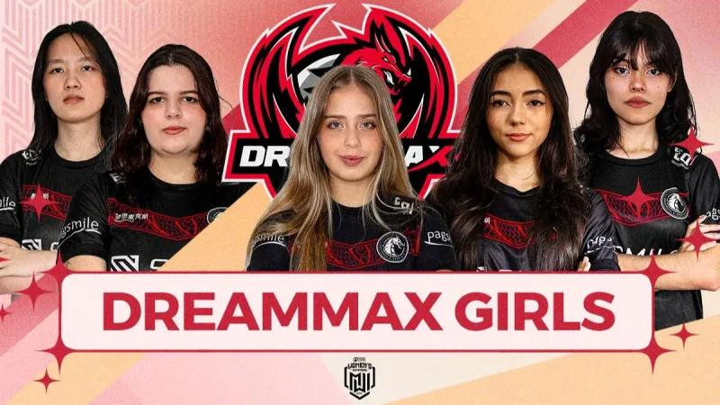

O Prêmio eSports Brasil (PeB) 2025 elegeu a FURIA como a melhor organização de esports da temporada, em cerimônia realizada nesta quinta-feira (18), no Auditório Simon Bolívar, no Memorial da América Latina, em São Paulo. É a terceira vez que a organização, fundada em 2017, vence a categoria no prêmio, já que a equipe já havia sido eleita melhor organização em 2020 e 2021, agora superando Team Liquid, MIBR, LOUD e Fluxo na lista de finalistas deste ano. Luciana “Angeliss” Cristina, jungler da DreamMax Girls, foi eleita Atleta do Ano no cenário inclusivo no Prêmio eSports Brasil (PeB) 2025.
A categoria leva em conta o somatório de votos obtidos em todas as modalidades inclusivas e é definida pelo Superjúri da premiação. O troféu foi entregue nesta quinta-feira, 18 de dezembro, no Memorial da América Latina, em São Paulo, depois da atleta já ter conquistado a categoria de Melhor Atleta de Outras Modalidades do Cenário Inclusivo cedo. Com as duas conquistas, o Prêmio eSports Brasil reconheceu a brasileira como um dos principais nomes do cenário feminino de Mobile Legends: Bang Bang (MLBB) em 2025.
Angeliss foi a cara da DreamMax Girls na rota internacional. Como titular da equipe, ela ajudou o time brasileiro a vencer o qualificatório LATAM do MLBB Women’s Invitational (MWI) 2025 e garantir a vaga para o mundial feminino em Riade, torneio que integra a Esports World Cup e reúne 16 das principais equipes do mundo.
No palco saudita, a DreamMax representou oficialmente Brasil e América Latina, venceu a Rising Rage para seguir viva na chave inferior e encerrou sua participação entre 9º e 12º lugar, em uma campanha marcada por superação e pela visibilidade que a line brasileira trouxe para a região.
O Prêmio eSports Brasil 2025 consagra os destaques da temporada em 29 categorias, entre técnicas e populares. Realizada desde 2017, a premiação é hoje o principal evento de reconhecimento da indústria de games e esports na América Latina, reunindo jogadores, organizações, técnicos, casters, streamers, criadores de conteúdo e projetos que movimentam o ecossistema competitivo no país.
VoltarJaime Pádua, fundador e co-CEO da FURIA, celebrou a aparição de Danil "molodoy" Golubenko na lista de melhores do mundo da HLTV.
Leia maisA BLAST perguntou para jogadores dos principais times mundiais qual time é o mais carregado por somente um jogador. A grande maioria das respostas foi a Spirit por conta do nível de Danil "donk" Kryshkovets.
Leia mais